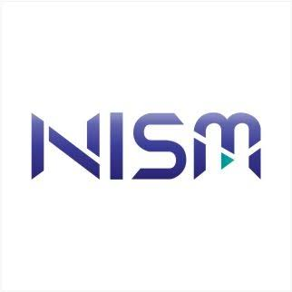
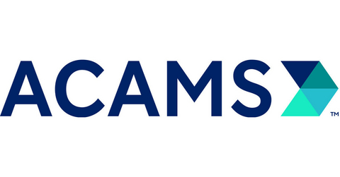

Hello, I'm
Financial Crime & Quality Professional with experience in AML/KYC, Transaction Monitoring, Quality Assurance and Process Improvement.
Currently developing expertise in Crypto AML, Blockchain, On-Chain Analysis, Power BI and SQL.
AML/KYC and Transaction Monitoring professional with expertise in financial crime compliance, alert investigation, KYC/CDD/EDD, sanctions screening, customer risk assessment, and AML red-flag analysis. Skilled in transaction and counterparty analysis, case documentation, quality reviews, team-level escalations, and supporting investigation quality and SLA requirements. KPMG-certified Six Sigma Green Belt with a focus on process improvement.
Currently developing expertise in Blockchain, Crypto AML, Power BI, and SQL to strengthen capabilities in On-chain investigations, Crypto AML analytics.
I enjoy analyzing complex information, identifying risks and patterns, investigating unusual activity, identifying root causes of quality issues, and using data to support better decision-making, risk management, and continuous improvement.
Click on a category to explore my skills.
Issued by:

Learned the fundamentals of Anti-Money Laundering, including KYC, Customer Due Diligence (CDD), Enhanced Due Diligence (EDD), transaction monitoring, sanctions screening, PEP identification, AML risk assessment and common money laundering typologies.
Key Learnings:
Issued by:
This course provided me with a comprehensive understanding of transaction monitoring and suspicious transaction reporting in the context of AML compliance. It covers key principles, best practices, and regulatory guidelines for effective transaction monitoring and suspicious activity reporting.
Key Learnings:
Issued by:
Learned the fundamentals of operational analysis of suspicious transaction reports, including data interpretation, trend analysis, and reporting techniques.
Key Learnings:
Issued by:
This course provided me an overview of open source intelligence (OSINT) and its applications in the field of anti-money laundering and counter-terrorism. It uses a simulated investigation rather than just presenting theory, which makes it useful for learning how an investigator actually structures research.
Key Learnings:
Issued by:

Issued by:
This course provides insights into law enforcement efforts around wildlife crime and the ongoing role that financial institutions can play in this regard. It will provide insights into how investigations are undertaken and how the intelligence cycle works, in view of ensuring that practitioners understand the context in which their Suspicious Transaction Report (STR)/Suspicious Activity Report (SAR) will be followed up.
Key Learnings:
Issued by:
This course outlines steps that financial sector actors can take to tackle the MHST challenge, and shares best practice from financial sector actors and regulators that are already codifying human rights principles. In particular, the course covers obligations on anti-money laundering (AML) and countering the financing of terrorism, due diligence principles and survivor engagement.
Key Learnings:
Issued by:
This course provides insights of what financial inclusion is and why including more people into a regulated system of financial transactions is important to extend the reach and effectiveness of anti-financial crime controls, reducing the risks of Terrorist Financing (TF), Money Laundering (ML), Proliferation Financing (PF) and other financial crimes, thus enhancing financial integrity.
Key Learnings:
Issued by:
Key Learnings:
This course aims to give a broad overview of online child sexual exploitation (OCSE), how new and emerging technologies can affect OCSE, investigative techniques that can be used to combat it, and the cryptocurrency nexus using financial intelligence related to OCSE and child sexual abuse material (CSAM) to help financial institutions better understand the threat and risk mitigation.
Issued by:
Key Learnings:
This course provided an overview of practical crypto and blockchain technology and its applications. This course also covered modern cyber attacks in cryptocurrency and blockchain space.
Key Learnings:
Issued by:
This course helped me to understand how to investigate cryptocurrency transactions and wallets. I learned how to trace Bitcoin, Ethereum, and Monero transactions using real-world blockchain forensics and crypto investigation techniques.
Key Learnings:
Issued by:
This course taught me how do money laundering and terrorist financing using cryptocurrencies work and what compliance tools and methods can help organizations to protect themselves against the potential risks from engaging in blockchain technologies and cryptocurrencies.
Key Learnings:
Issued by:
KPMG Lean Six Sigma course helped me with a deep understanding of Lean Six Sigma methodology and its applications in process improvement. This 32-hour Master Black Belt instructor led live virtual course covered the DMAIC (Define, Measure, Analyze, Improve, Control) framework which to helped me to improve AML investigation quality, reduce errors, and strengthen controls.
Key Learnings:
A no-code customer risk rating model for KYC/CDD, implementing a standard FATF risk-based approach (RBA) — built entirely in Excel formulas.
A working AML transaction monitoring build using only spreadsheet formulas — no Python, no SQL.
A no-code sanctions and PEP (Politically Exposed Person) screening workflow, built entirely in Excel formulas. It screens a synthetic customer book against a reference list structured the way real sanctions/PEP data feeds are organized, most notably OpenSanctions and OFAC's SDN list: an entity record with a primary name, known aliases, entity type, country, date of birth, and the list/program that designated it.
A no-code AML Quality Assurance (QA) review program — 10 fictional analyst case files, each independently scored against an 8-point QA checklist using a critical-error methodology. Built entirely in Excel formulas.
A complete, single-case walkthrough of a crypto exchange transaction-monitoring program — from customer onboarding through alert investigation to a risk-based disposition. Built entirely in Excel formulas.
A no-code blockchain forensics workbook tracing a suspicious 150 ETH inbound transfer through a peel chain — the classic on-chain layering pattern where a wallet repeatedly splits off small amounts while the bulk of funds continues moving toward a cash-out point. Built entirely in Excel formulas, structured around Etherscan's real transaction export schema.
A reference guide to seven core crypto financial crime typologies — each with a definition, a worked example, a diagram, and formula-driven detection logic that distinguishes it from the other six. Built entirely in Excel formulas for the detection engine, with a Markdown reference guide for the conceptual content.
Interested in discussing AML, Crypto AML, Data Analytics or Quality opportunities?
You can connect with me through LinkedIn, email, or phone.
Email:
biswa7jit@gmail.com
Phone:
+91 8588046149
LinkedIn:
linkedin.com/in/biswa7jit/